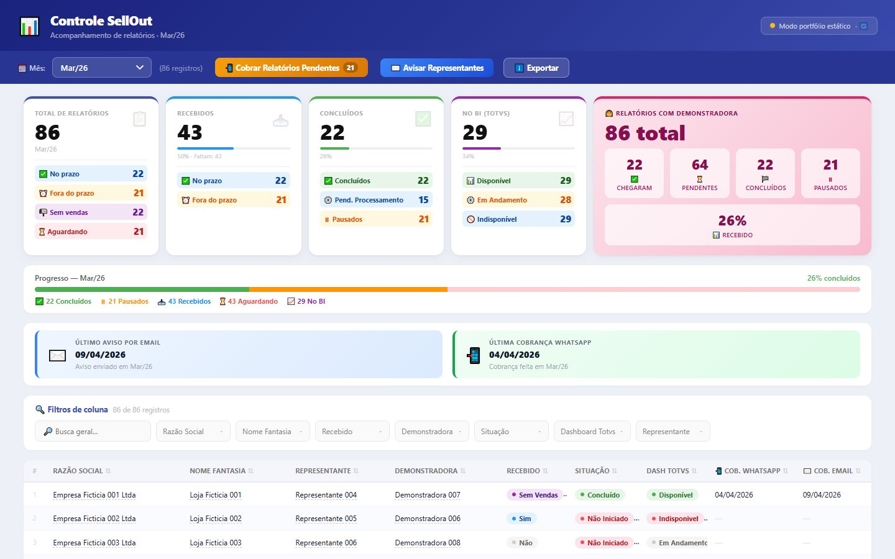
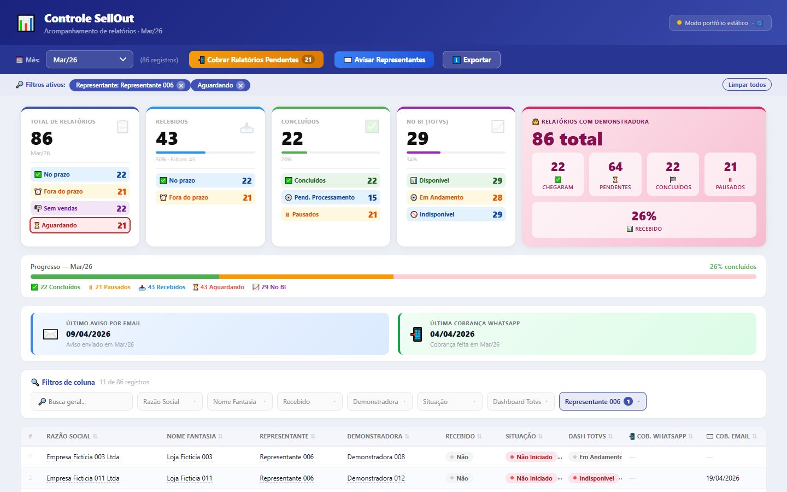
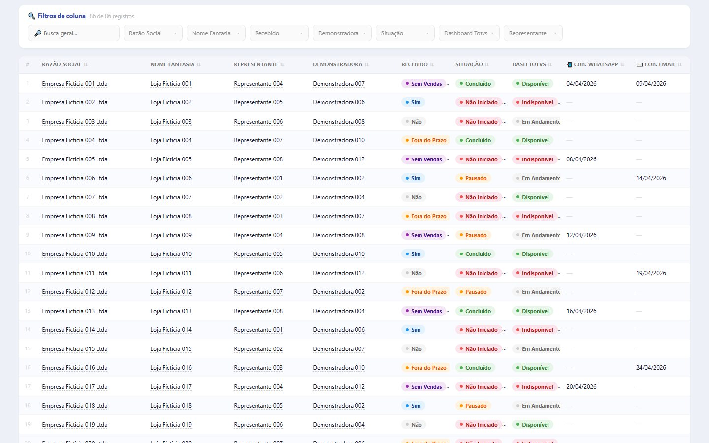
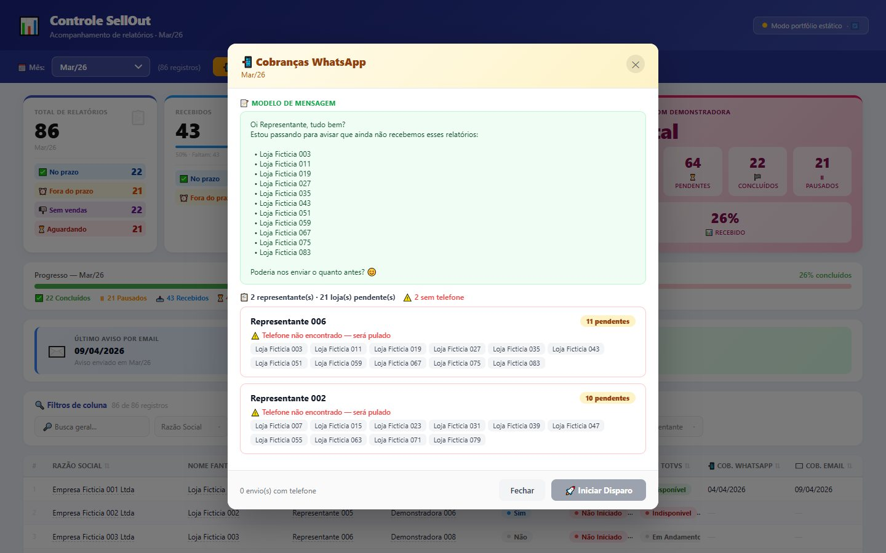
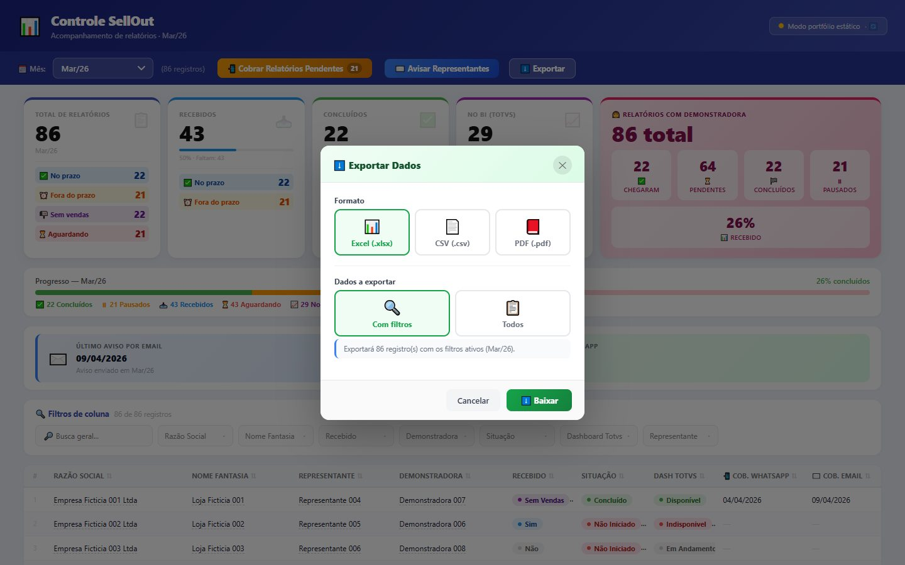

From a tracking spreadsheet to a follow-up dashboard.
A dashboard that tracks, month by month, which stores have sent their sell-out reports: what arrived on time, what is late, what has already been processed and what is already in the BI. The data stays in a Google Sheet, served by Google Apps Script, and pending reports turn into WhatsApp and email follow-ups that are logged in the spreadsheet itself.

Every month, a list of stores and one question: who has sent theirs?
Each store's sales reports (sell-out) come in through the sales reps. The team uses them to process the data, publish the results in the BI and calculate the bonuses for product demonstrators. Tracking lives in a Google Sheet, with one row per store and one tab per month. The dashboard was built to answer the month-end closing questions quickly and turn pending reports into follow-ups.
How many reports have arrived, how many are late, who hasn't sent theirs yet and how much is already in the BI? And for the missing ones, follow up without writing each message by hand.
On time, late or no sales
Each store's status for the month, with what is still pending kept apart from the rest.
From report to BI
Processing status (completed, paused, not started) and availability in the Totvs Dashboard.
The spreadsheet remains the source. The dashboard just makes it readable.
The team already worked in the spreadsheet, and it remained the place where status gets updated. The dashboard reads, summarizes and writes back to the spreadsheet only what it produces itself: the follow-up dates.
No new database
A Google Apps Script deployed as a web app turns the spreadsheet into an API that returns JSON. There is no server to maintain.
One tab per month
Each month is a tab named with the AA_Mmm pattern (for example, 26_Mar). The dashboard discovers the tabs on its own and opens on the most recent month.
Every number filters the screen
Each card and each detail line is a filter: one click turns it on, another turns it off, and the table shows exactly the stores behind that number.
Follow-ups leave a trail
Every follow-up sent records the date and time on the row of each of the sales rep's stores, per channel: WhatsApp or email.
Monthly tabs, a contacts tab and nine columns.
The header is on row 1, and the Apps Script reads columns by name, not by position. Sales rep contacts live in a separate tab, Representantes, linked to the monthly tabs by the sales rep's name.
| Column | In the dashboard | Expected values | Use |
|---|---|---|---|
Razão Social · Nome Fantasia | Razão Social · Nome Fantasia | text | Identify the store (legal name and trade name); the trade name goes into the follow-up message |
Representante | Representante | name | Groups pending reports and links to the contacts tab |
Fluxo Agenda | Demonstradora | name or empty | Separates reports from stores with a product demonstrator |
Recebido | Recebido | Sim · Fora do Prazo · Sem Vendas · Não | Report status for the month (yes, late, no sales, no) |
Situacao | Situação | Concluído · Pausado · Não Iniciado | Processing progress (completed, paused, not started) |
Dashboard Totvs | Dash Totvs | Disponível · Em Andamento · Indisponível | Whether the store's data is already in the BI (available, in progress, unavailable) |
Ultima Cobrança · Ultima Cobrança Email | Cob. WhatsApp · Cob. Email | dd/MM/yyyy HH:mm | Written by the Apps Script on every follow-up |
From the spreadsheet to the screen, and back to the spreadsheet.
It always reads the whole tab: the Apps Script returns rows as objects (header → value), drops empty rows and formats the dates up front. All calculations happen in the browser, starting from that list.
One URL, six actions, seven functions.
The backend is a single Google Apps Script file deployed as a web app. The doGet function takes the action parameter and always responds in JSON; errors also come back as JSON, with the message.
| Action | Function | What it does |
|---|---|---|
sheets | getSheets | Lists the tabs whose name matches /^\d{2}_[A-Za-z]{3}$/: only the months, never helper tabs |
(default) sheet=26_Mar | getRows | Returns the tab's rows as objects, with dates as dd/MM/yyyy and no empty rows |
telefones | getTelefones | Name → phone map, from columns A and B of Representantes |
emailsRepresentantes | getEmailsRepresentantes | Names and emails from column C, only those containing @ |
registrarCobranca | registrarCobranca | Writes the date and time to Ultima Cobrança (WhatsApp) |
registrarCobrancaEmail | registrarCobranca | Writes the date and time to Ultima Cobrança Email |
Logging a follow-up always follows the same sequence:
Validates the parameters
tab and sales rep are required; without them, the response is ok: false with the reason
Finds the channel column by name
if the column doesn't exist yet, it is created at the end of the header
Looks up all of the sales rep's rows
case-insensitive comparison
Writes the date and time on each row
in the project's time zone, formatted dd/MM/yyyy HH:mm
Forces the write and responds
SpreadsheetApp.flush() and a response with how many rows were written
A new column without breaking anything
Email follow-ups came after WhatsApp ones. Because the column is located by name and created if missing, older tabs keep working without manual adjustments.
Deploying without changing the URL
Each change becomes a new version of the same deployment, and the URL used by the dashboard stays the same.
Five cards, every line a filter.
The indicators are calculated in the browser from the month's rows. The rules are explicit in the code, and some of them were business decisions:
Sim + Fora do Prazo
Received is whatever arrived, on time or late. Sem Vendas (no sales) is left out of this total and gets its own line on the total card.
Total − received − no sales
The stores that haven't sent anything yet. These are the ones that get followed up, marked as Não in the Recebido column.
Completed, paused and pending
Pending processing means a report that has already arrived (Sim or Fora do Prazo) and is still marked Não Iniciado (not started).
Available, in progress, unavailable
How much of the month is already in the Totvs Dashboard, with “Indisponível” spelled with or without the accent treated as the same value.
The fifth card isolates reports with a product demonstrator (the Fluxo Agenda column): arrived, pending, completed, paused and the percentage received. Below the cards, a progress bar stacks completed, paused and awaiting, and two panels show the date of the last email notice and the last WhatsApp follow-up, read from the spreadsheet itself.
Sixteen different breakdowns fit into five cards, and any of them becomes, with one click, the exact list of stores behind the number.
One page, filters that stack.
The interface is a single HTML file with CSS and plain JavaScript, no framework. The card filter stacks with the column filters, and everything active shows up as a pill at the top, removable one by one or with “Limpar todos” (clear all).
Global search
Searches the text across all of a row's columns at once.
Seven column filters
Multi-select with built-in search, plus “Selecionar todos” (select all) and “Limpar” (clear) in each list.
Click on a cell
Clicking a sales rep's, store's or product demonstrator's name in the table turns on the filter for that value.
Sorting and pages
Any column sorts using Portuguese alphabetical order; the table pages in sets of 50.
Silent refresh
Every 5 seconds the tab is reread without clearing filters or sorting or changing the month, with the time of the last refresh shown at the top.




One message per sales rep, not per store.
The “Cobrar Relatórios Pendentes” (follow up on pending reports) button shows how many stores are still missing for the month. When opened, the dashboard groups the awaiting stores by sales rep, fetches the phone numbers from the Representantes tab and builds a message with the rep's first name and the list of stores.
List review
message template, total sales reps and stores, and a warning about anyone without a phone number (they will be skipped)
Guided sending
“Enviar agora” (send now) opens WhatsApp Web with the number (prefixed with 55) and the text ready
Log and next
“Próximo” (next) logs the follow-up in the spreadsheet and moves on to the next sales rep, with a progress bar
Wrap-up
the last send logs and closes the run with the total number of sales reps notified
The general notice to sales reps goes out by email, through a 4-step wizard that prepares everything to paste into webmail: recipients, subject, body and sending. When it finishes, the email follow-up is logged in the spreadsheet for each sales rep.
Text that follows the calendar
The deadline is the 10th. The email body changes depending on whether the deadline is today, tomorrow, already past or still ahead, and the subject includes the reference month (the previous month).
Formatting preserved
The body is copied as HTML and plain text at the same time (ClipboardItem), with two fallbacks in case the browser doesn't allow it.
Timeout
Fetching the emails has a 10-second timeout (AbortController), with a clear message if the Apps Script doesn't respond.
On the team's spreadsheet; here, in the browser.
- HTML, CSS and plain JS
- exports Excel, CSV and PDF
doGetwith 6 actions- JSON responses
- logs the follow-ups
- one tab per month
- Representantes tab
This demo has no spreadsheet and no Apps Script. The dashboard runs in portfolio mode: three months of fictional stores, sales reps and product demonstrators are generated right in the browser, and auto-refresh is turned off. Cards, filters, table, sorting, export and building the follow-up all work normally; the steps that depend on the Apps Script (phone numbers, emails and logging follow-ups) have no data source. The original backend is in the repository, in apps-script_6.js.
Technologies
Click “Aguardando” and see who's missing.
Suggested path: on the Total card, click Aguardando (awaiting); then click a sales rep's name in the table. Open “Cobrar Relatórios Pendentes” to see the stores grouped, and finish by exporting the selection to Excel.